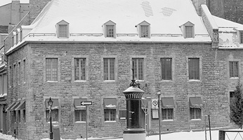
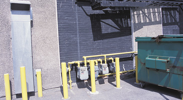
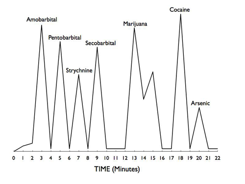
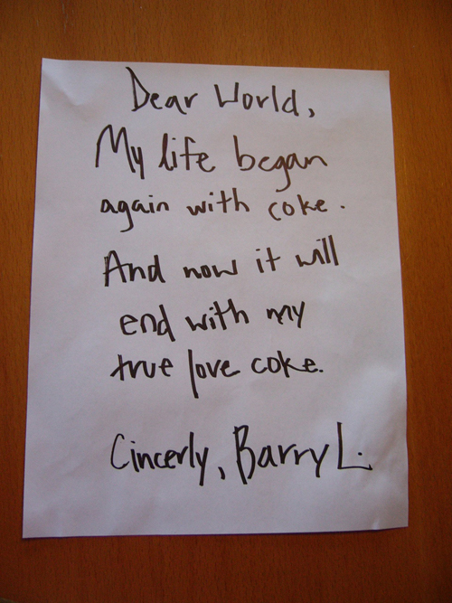
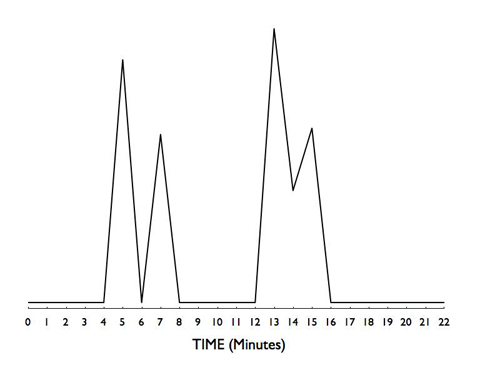

Late one evening, a tenant of a three-story rooming house called police. The tenant had discovered the body of a 26-year-old male when he entered the man's suite to borrow some cigarettes. The male subject, known to police as a low-level drug dealer who frequented the seedier parts of the downtown core, appeared as if he had died of a drug overdose.
After police arrived and sealed off the subject's suite, they noticed that the subject's eyes were wide open and that rigor mortis had already set in. The subject's legs and left arm were oriented at strange angles - almost perpendicular to his torso. That the subject had thrashed about the room during his last moments or that he had been involved in a struggle, seemed evident.
Police found several marijuana cigarettes, residue from what appeared to be crack cocaine, and two empty bottles of prescription barbiturates scattered around the subject's body.
A suicide note was found nearby (sample evidence #1). Unfortunately, police were unable to find a suitable writing sample from the subject. Consequently, the authorship of the note could not be confirmed. In addition, an empty bottle of rat poison was found in a dumpster outside the rooming house. No fingerprints were found on the bottle.

While canvassing other tenants in the rooming house, police spoke with an acquaintance of the subject who mentioned that two unidentified males who seemed to think that the subject had cheated them in a drug deal had recently threatened him. A thorough search of the subject's one-room suite by police produced a used syringe from a garbage can in the suite.
To determine the cause of death, an autopsy was conducted by the medical examiner who noted a small puncture wound in the subject's right upper arm. A forensic toxicologist made a chromatogram (sample evidence #2) from a sample of the victim's blood.
Use the above information and the following three images to answer the questions in your assignment.
Chromatogram of Various Drugs and Poisons


